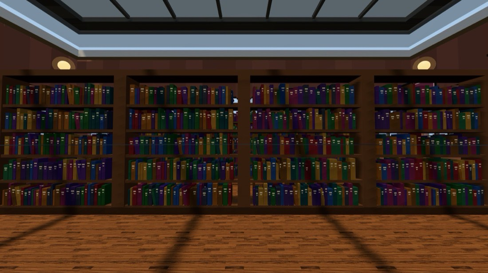
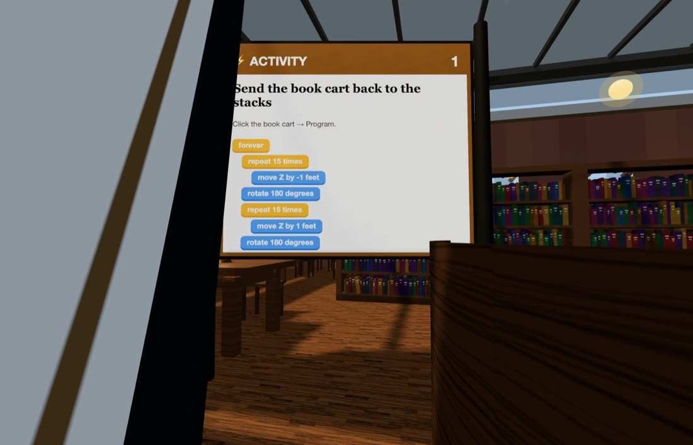
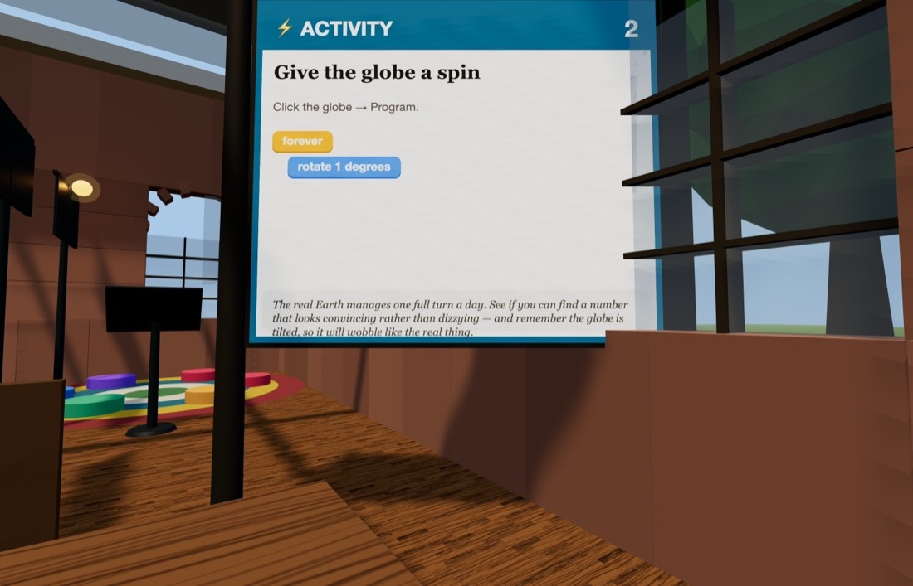

📚 The Library
A public reading room with a glass roof, Dewey Decimal aisles, and a card catalog nobody under 30 has ever used.
Getting there: ▶ Open The Library One click — nothing to download and no account. The Library is no longer listed under ☰ Menu → Load World — that menu is down to four worlds — so the button above, or Get More Worlds in the same menu, is the way in. You will be set down at the front gate. Look for the bright ⚡ ACTIVITY boards — there are two of them. Type it in: edusim3dweb.com/app/?world=3 Opening a world replaces whatever is currently in your copy — save first with ☰ Menu → Load World → Save World if you have something you want to keep.



Quick starts — do these first
Both of these are printed on boards inside the world too, so you can leave this card at home. Click the object, choose Program, drag the blocks together in this order, then press Save.
Send the book cart back to the stacks
Click the book cart → Program
- forever
- repeat 15 times
- move forward -1 feet
- rotate 180 degrees
- repeat 15 times
- move forward 1 feet
- rotate 180 degrees
💡 Notice the second loop uses minus one foot — a negative move forward reverses. You could write it the other way instead: rotate 180 degrees between the two loops and use a positive number both times, because move forward follows whichever way the cart is now pointing.
Give the globe a spin
Click the globe → Program
- forever
- rotate 1 degrees
💡 The real Earth manages one full turn a day. Find a number that looks convincing rather than dizzying — and remember the globe is tilted, so it wobbles like the real thing.
Then try these three
-
Cart fleet
One cart is slow. Duplicate it into a fleet, then send them off — because each copy keeps the program but loses the duplicate block, they will all run the same route without breeding.
- repeat 4 times
- duplicate 4 ft away
-
Reading lamp mood
Program a light orb above the tables to drift between two warm colours. Try to find the pair that actually makes the room feel like a library.
- forever
- change color to orange
- wait 3 seconds
- change color to yellow
- wait 3 seconds
-
Shelf on the loose
Make an entire bookshelf slide out of its row and back again. Librarians would not approve. Time how long one round trip takes, then work out its speed in feet per second.
- forever
- repeat 10 times
- move forward 0.5 feet
- wait 0.1 seconds
- repeat 10 times
- move forward -0.5 feet
- wait 0.1 seconds
Block colours
- Control — repeat, forever, wait, when an object says, duplicate
- Motion — move forward, move up, glide, rotate, go back to start
- Looks — say, change size, set size, set opacity, change colour
One rule that catches everybody: move forward and glide follow the way the object is pointing, so a rotate in front of them genuinely steers — four sides and four 90° turns bring something back exactly where it began. move up is the exception: up is up whichever way a thing is facing.